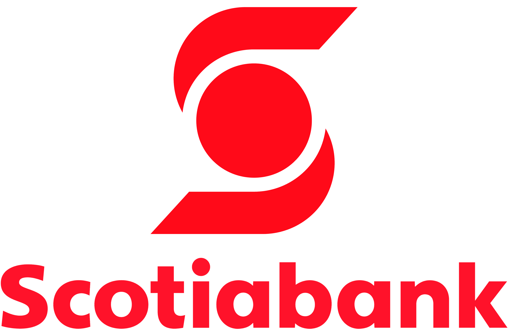
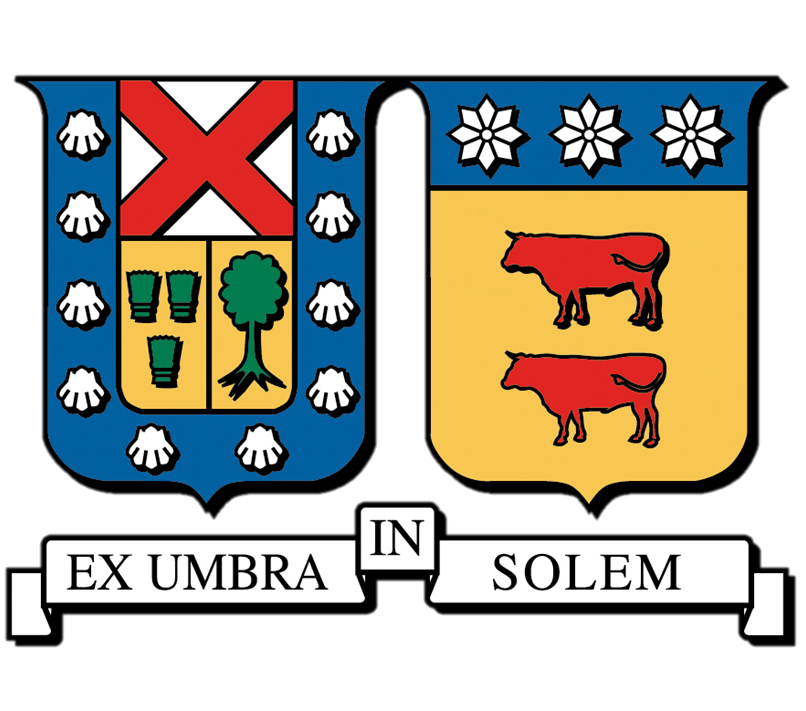

Infraestructura Blockchain Local
Despliegue y configuración de una red Ethereum local para pruebas de desarrollo utilizando Kurtosis y nodos Geth modificados. Análisis de ejecución de contratos y gestión de gas fees.
Ingeniero Civil Informático | Data Engineer & Analyst
ContactoIngeniero Civil Informático titulado de la UTFSM (con nivel de inglés avanzado C1), y actualmente busco mi primer desafío profesional formal en roles de Ingeniería y Análisis de Datos (Entry/Junior). Tengo experiencia práctica comprobada diseñando arquitecturas cloud, automatizando pipelines ETL/ELT en Google Cloud Platform (GCP) y transformando grandes volúmenes de datos mediante Python y SQL. Mis bases técnicas están fuertemente enfocadas en asegurar la calidad, trazabilidad y el correcto gobierno de la información para entornos corporativos.
PwC - Santiago, Chile
Enero 2025 - Febrero 2025
SWAL - Santiago, Chile
Abril 2024 - Noviembre 2024

Scotiabank - Santiago, Chile
Enero 2024 - Marzo 2024
Despliegue y configuración de una red Ethereum local para pruebas de desarrollo utilizando Kurtosis y nodos Geth modificados. Análisis de ejecución de contratos y gestión de gas fees.
Sistema escalable diseñado para ingerir, limpiar y transformar grandes volúmenes de datos transaccionales, mejorando la fiabilidad del flujo de información hacia el equipo de analítica.
Implementación de un sistema de simulación notarial mediante la firma de transacciones en Ethereum utilizando Smartcards y llaves de seguridad físicas.
Ethereum, Solidity, Ethers.js, go-ethereum (Geth), Clef
Data analysis, scripting, automatización y pipelines de datos
Transformación de datos, fiabilidad de sistemas, bases de datos
Bash, Shell scripting, administración de sistemas, Windows/Linux

Graduación: 2026
Formación sólida en ciencias de la computación, ingeniería de software, arquitectura de sistemas y bases de datos. Tesis enfocada en la integración de hardware de seguridad (Smartcards) con redes Blockchain.
Marzo 2023 - Diciembre 2024
Algo aquí
Marzo 2024 - Agosto 2024
Algo aquí
Estoy siempre abierto a nuevas oportunidades y desafíos profesionales.
carlosvkuhnt@gmail.com
Teléfono
+56 9 5639 8063